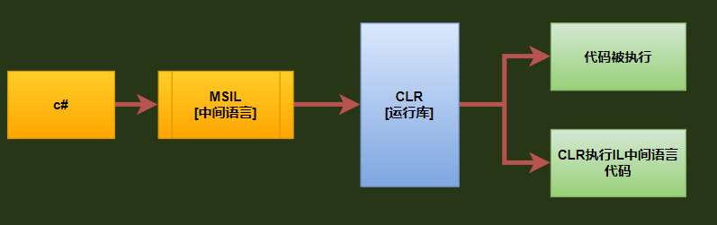
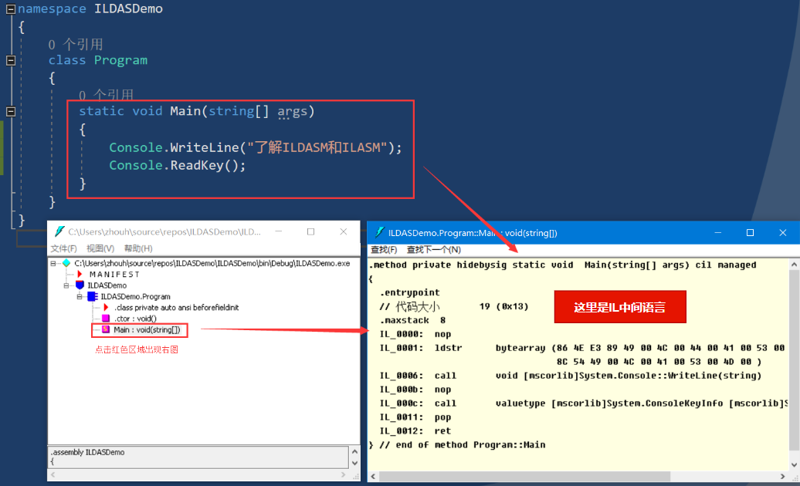
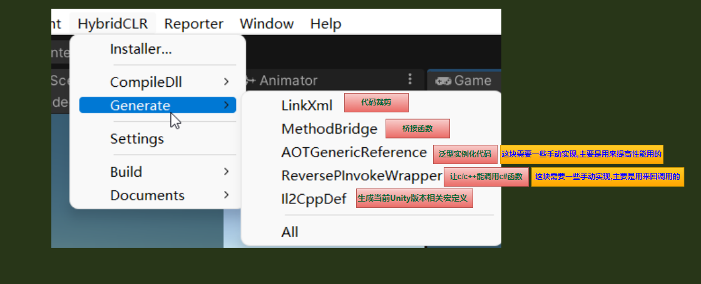
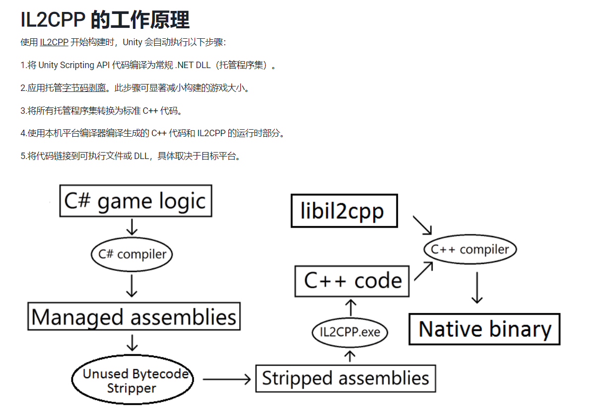
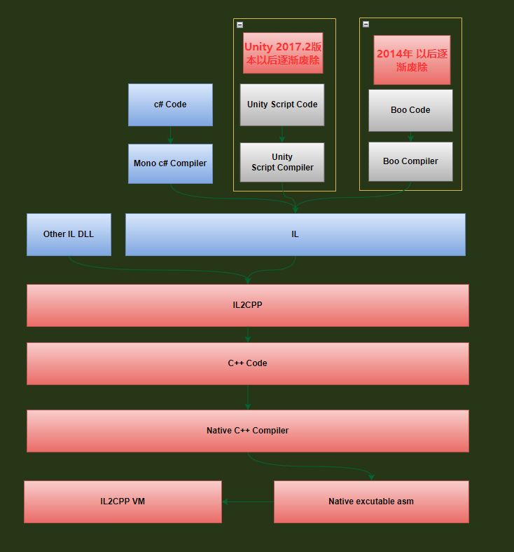
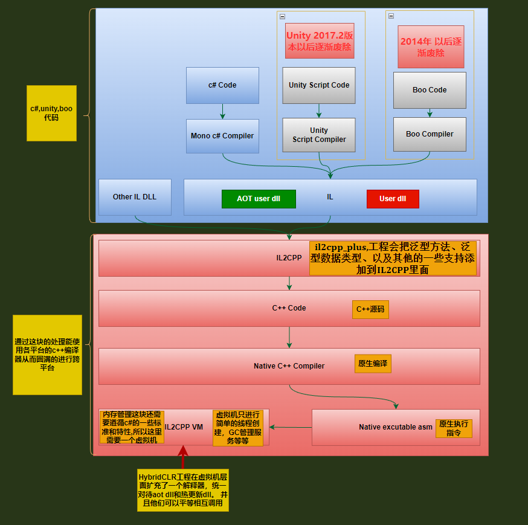
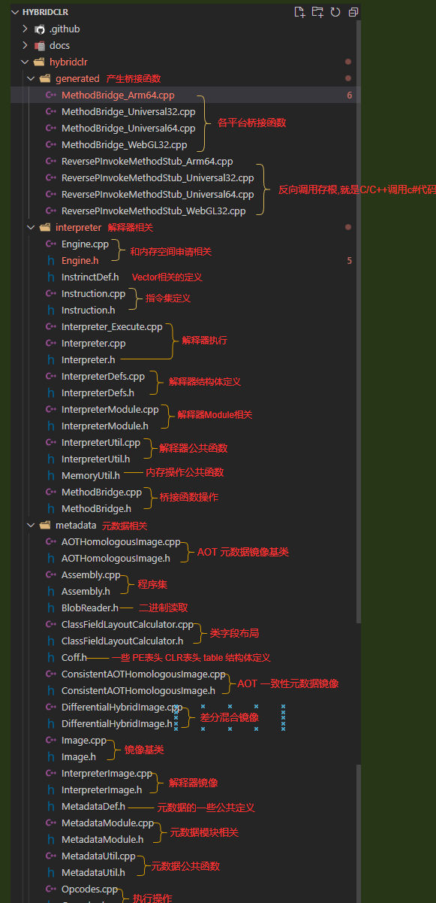
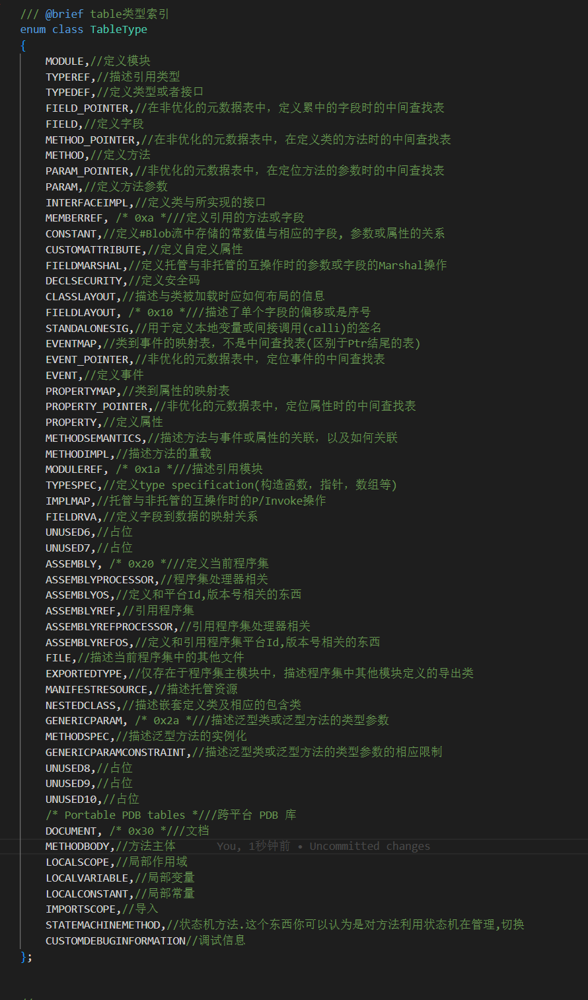

一些前提知识点

代码术语区别
-
IL:微软平台上的一门中间语言，我们常写的C#代码在编译器中都会自动转换成IL,中间语言是编译使用高级 .NET 语言编写的代码后获得的结果。 对使用其中一种语言编写的代码进行编译后，即可获得 IL 所生成的二进制代码
-
托管代码：
托管代码就是执行过程交由运行时管理的代码。 在这种情况下，相关的运行时称为公共语言运行时 (CLR)，不管使用的是哪种实现（例如 Mono、.NET Framework 或 .NET Core/.NET 5+）。 CLR 负责提取托管代码、将其编译成机器代码，然后执行它。 除此之外，运行时还提供多个重要服务，例如自动内存管理、安全边界、类型安全，把托管代码理解成上面的IL中间语言也行 -
非托管代码：
非托管代码（Unmanaged Code）是指直接编译成目标计算机的机器码，这些代码只能运行在编译出这些代码的计算机上，或者是其他相同处理器或者几乎一样处理器的计算机上。非托管代码不能享受公共语言运行库所提供的一些服务，例如内存管理、安全管理等。非托管代码（Unmanaged Code）不由CLR公共语言运行库执行，而是由操作系统直接执行的代码,如果非托管代码需要进行内存管理等服务，就必须显式地调用操作系统的接口，通常非托管代码调用Windows SDK所提供的API来实现内存管理。 -
原生代码:
native code是本地cpu的目标执行代码, 不是IL, 所以速度很快, 它的执行不依赖某个虚拟机或者解释器，编译后可直接依附操作系统运行，不需要经过虚拟机之类的东西 -
程序集:程序集（Assembly）的文件负责封装中间语言，程序集中包含了描述所创建的方法、类以及属性的所有元数据
编译器
- c#编译器: 将
c#编译为IL[C#---->CIL] - Mono Runtime编译器:将
IL转换成原生码，然后让Mono运行时去执行,这样其实也达到了c#跨平台的效果
平台编译
build
编译GCC的平台
host
运行GCC的平台
target
GCC编译产生的应用程序的运行平台
- native compiler:三者全部相同（build = host = target）就是
原生编译我们在PC上装的Ubuntu或者Fedora里面带的GCC，就是native compiler - cross compile:如果build = host，但是target跟前两者不同就是
交叉编译开发手机应用程序的编译器，通常运行在PC或Mac上，但是编译出来的程序无法直接在PC或Mac上执行
编译方式
- 即时编译[
Just in time, JIT]: 就是在程序运行的时候把CIL的byte code 转成目标平台的原生码,也就是Mono Runtime编译器干的活 - 提前编译[
Ahead of time,AOT]:程序运行前将exe或者dll里面的CIL的byte code部分转成目标平台的原生码,并且存储起来，好加快速度,但是程序中还是会有部分的CIL的byte code需要JIT编译 - 完全静态编译[
Full ahead of time,Full-AOT]:就是将所有源码编译成目标平台所需要的原生码
IOS不支持JIT编译的原因
- IOS并非把JIT禁止了，主要还是IOS封存了内存的[
可执行权限]，变相的封锁了JIT编译方式
值类型和引用类型
C# 中的类型一共分为两类，一类是值类型(Value Type)，一类是引用类型(Reference Type)。
值类型包括结构体(
struct)和枚举(enum)。 引用类型包括类(class)、接口(interface)、委托(delegate)、数组(array)等。常见的简单类型如
short、int、long、float、double、byte、char等其本质上都是结构体，对应struct System.Int16、System.Int32、System.Int64、System.Single、System.Double、Syetem.Byte、System.Char，因此它们都是值类型。但string和object例外，它们本质上是类，对应class System.String和System.Object，所以它们是引用类型。
值类型
值类型变量本身保存了该类型的全部数据，当声明一个值类型的变量时，该变量会被分配到栈(Stack)上。
引用类型
引用类型变量本身保存的是位于堆(Heap)上的该类型的实例的内存地址，并不包含数据。当声明一个引用类型变量时，该变量会被分配到栈上。如果仅仅只是声明这样一个变量，由于在堆上还没有创建该类型的实例，因此，变量值为null，意思是不指向任何类型实例(堆上的对象)。对于变量的类型声明，用于限制此变量可以保存的类型。
值传递和引用传递
C#中方法的参数传递默认的是值传递，引用传递和输出传递需要在参数类型前面对应加上ref、out限制符，由于输出传递和引用传递类似，这里只讨论引用传递。
值传递参数是原变量的拷贝，值传递参数和原变量的内存地址不同，因此方法中对值传递参数的修改不会改变原变量。
引用传递参数是原变量的指针，引用传递参数和原变量的内存地址相同，相应的方法中对引用传递参数的修改会改变原变量。
HybridCLR菜单

IL2CPP
就是上面的2.1编译方式中的AOT提前编译
分为下面两部分
- AOT编译器
把IL中间语言转成CPP文件的作用
- 运行时库
主要是做垃圾回收,线程文件的获取，还有对托管数据的原生代码进行修改
为啥要转换成CPP
- 运行速度快,这个毋庸置疑
- mono 为了跨平台，他是通过VM来实现的，也就是说有几个平台，就需要实现几个VM,这种方法耗时耗力,而且为了实现各个平台的支持和移植，势必要把代码进行修改，然后出现bug在进行修复，来来回回时间和精力花费不少，所以为啥不利用现成各个平台的C++编译器执行了,这也是IL2CPP的核心思想
- 虽然最后代码都变成的静态的C++但是内存管理这块还是需要遵循c#的标准和方式,这也是为什么最后还需要一个 IL2CPP VM的原因 这个时候VM做得主要还是GC的管理,线程的创建等等一些辅助服务性的工作
工作原理就直接上官网的图了


为什么IL2CPP不支持热更新
因为IL2CPP是一个纯静态的AOT运行时，然后不支持运行时加载DLL，所以是不支持热更新
然后hybridclr扩充了IL2CPP的代码,使他从AOT运行方式变成了AOT+Interpreter的混合方式从而可以动态的加载dll实现热更新
区别
原始IL指令集是基于栈的指令集
Hybridclr是基于寄存器指令
两种方式各有优缺点，基于栈的指令集很明显可移植高，但是工作效率较低。而基于寄存器指令集寄存器由硬件直接提供，工作效率高，程序受硬件约束。
Hybridclr的原理
dll不过是元数据和代码的集合,aot与 热更新dll的区别只不过一个函数以aot代码方式执行，一个以解释方式执行,最后都会直接在虚拟机层面将aot和热更新dll统一对待
为什么Hybridclr能做到如此统一和彻底，因为元数据不过是数据，不管aot还是热更新是没有本质区别的
而托管代码执行，依赖的不过是代码和数据
Hybridclr分两个工程
-
Hybridclr工程进行了源码的编译解析，在这里可以理解成这个工程做得主要事情是解释器的工作,此解释器是在IL2CPP VM扩充的，不解的可以看下图
-
第二个工程是il2cpp_plus,这个工程会把泛型方法、泛型数据类型、以及其他的一些支持添加到IL2CPP里面,也可以简单的理解成为主要是为了给IL2CPP扩展功能用的，从而能让他动态的加载DLL

源码解析
Hybridclr工程
这个是代码工程结构

阅读前提
-
ARM64:CPU的ARM架构 主流的手机/平板品牌，绝大数是采用ARM架构 -
BoehmGC算法，unity底层托管堆使用的是BoehmGC算法是用的mark-sweep（标记-清扫）算法,具体和Java的gc算法类型,这块由于篇幅问题就不详细写了,太多内容一句话说不清楚,以后有时间整理一篇详细文章出来 -
Module是 .dll 或 .exe 类型的可移植可执行文件，这些文件由一个或多个类和接口组成 -
Assembly是程序集 -
Assembly有main程序函数。module只能附属于程序集，程序集可以拥有多个。 -
MetaData就是用System.reflection得到的方法，属性，参数等等，这些都是**元数据** -
MethodBody方法主体，就是**调用方法时执行的代码块**，方法的主体语句必须放在花括号（即大括号 {}）中。 -
Il2CppImage这个结构体是程序集镜像,可以通过它来获取命名空间,class,方法,函数指针地址等等typedef struct Il2CppImage { const char* name;//名字 const char *nameNoExt;//扩展名字 Il2CppAssembly* assembly;//程序集指针 TypeDefinitionIndex typeStart;//方法类型偏移位置开始 uint32_t typeCount;//方法总数 TypeDefinitionIndex exportedTypeStart;//导出类型偏移位置开始 uint32_t exportedTypeCount;//导出类型总数 CustomAttributeIndex customAttributeStart;//自定义属性偏移位置开始 uint32_t customAttributeCount;//自定义属性总数 MethodIndex entryPointIndex;//方法入口点索引 #ifdef __cplusplus mutable #endif Il2CppNameToTypeDefinitionIndexHashTable * nameToClassHashTable;//name对应的class的hashTable const Il2CppCodeGenModule* codeGenModule;//Module指针 uint32_t token;//通过他可以得到函数指针地址 uint8_t dynamic;//没看到使用,估计是用来验证是不是动态lib使用的 } Il2CppImage; -
所有的
metadata解析都是遵循的下面规范ECMA-335 - Ecma International (ecma-international.org)CLI中大多数
metadata被为几十种类型，每个类型的数据组织成一个table如下图,如果有缺失类型,请去ECMA-335查看
-
Portable PDB tables.NET引入了一种新的符号文件（PDB）格式，主要用于跨平台早期
PDB格式是为了C和C++设计的，发展了多年以来现在已经支持.NET了。不幸的是，这种格式一直以来都被认为是专有的，这就意味着它没有很好文档记录，而且只能使用Windows库读取，所以有了.NET Core，而且为了跨平台，于是开发了这个新的跨平台PDB库 -
原始 MethodInfo
typedef struct MethodInfo { Il2CppMethodPointer methodPointer;//指向普通执行函数 InvokerMethod invoker_method;//指向反射执行函数 const char* name;//名字 Il2CppClass *klass;//函数所属类指针 const Il2CppType *return_type;//返回值类型 const ParameterInfo* parameters;//参数信息 union//generic instance method { const Il2CppRGCTXData* rgctx_data; /* is_inflated is true and is_generic is false, i.e. a generic instance method */ const Il2CppMethodDefinition* methodDefinition;//方法定义 }; union//uninflated generic method { const Il2CppGenericMethod* genericMethod; /* is_inflated is true */ const Il2CppGenericContainer* genericContainer; /* is_inflated is false and is_generic is true */ }; uint32_t token; uint16_t flags; uint16_t iflags; uint16_t slot; uint8_t parameters_count; uint8_t is_generic : 1; /* true if method is a generic method definition */ uint8_t is_inflated : 1; /* true if declaring_type is a generic instance or if method is a generic instance*/ uint8_t wrapper_type : 1; /* always zero (MONO_WRAPPER_NONE) needed for the debugger */ uint8_t is_marshaled_from_native : 1; /* a fake MethodInfo wrapping a native function pointer */ } MethodInfo; -
改写后的MethodInfo
typedef struct MethodInfo { Il2CppMethodPointer methodPointer; InvokerMethod invoker_method; const char* name; Il2CppClass *klass; const Il2CppType *return_type; const ParameterInfo* parameters; union { const Il2CppRGCTXData* rgctx_data; /* is_inflated is true and is_generic is false, i.e. a generic instance method */ const Il2CppMethodDefinition* methodDefinition; const Il2CppMethodDefinition* methodMetadataHandle; }; /* note, when is_generic == true and is_inflated == true the method represents an uninflated generic method on an inflated type. */ union { const Il2CppGenericMethod* genericMethod; /* is_inflated is true */ const Il2CppGenericContainer* genericContainer; /* is_inflated is false and is_generic is true */ Il2CppMetadataGenericContainerHandle genericContainerHandle; /* is_inflated is false and is_generic is true */ Il2CppMethodPointer nativeFunction; /* if is_marshaled_from_native is true */ }; uint32_t token; uint16_t flags; uint16_t iflags; uint16_t slot; uint8_t parameters_count; uint8_t is_generic : 1; /* true if method is a generic method definition */ uint8_t is_inflated : 1; /* true if declaring_type is a generic instance or if method is a generic instance*/ uint8_t wrapper_type : 1; /* always zero (MONO_WRAPPER_NONE) needed for the debugger */ uint8_t is_marshaled_from_native : 1; /* a fake MethodInfo wrapping a native function pointer */ void* interpData; Il2CppMethodPointer methodPointerCallByInterp; Il2CppMethodPointer virtualMethodPointerCallByInterp; bool initInterpCallMethodPointer; bool isInterpterImpl; } MethodInfo; -
实例方法（instance method）和静态方法（static method）被static修饰的方法为
静态方法，之外的方法为实例方法void staticMethodTest(){ //直接调用静态方法 Boss.work(); //创建实例 Boss boss = new Boss(); //调用实例方法 boss.programming(); } class Boss { String name; public void programming(){ System.out.println("I am programming."); } public static void work(){ System.out.println("I am working."); } }
AOT和interpreter桥接过程

AOT加载补充元数据原理
为什么需要AOT补充元数据,简单的来讲主要是下面几点
l2cpp是AOT运行时，它运行时使用的几乎所有（为什么不是全部？）类型都是编译期已经静态确定的。你在AOT中只实例化过List<int> 和 List<string>，在热更新代码中是不能使用类似 new List<float>() 这样的代码的。
尽管il2cpp可以在内存中创建出List<float>类型的大多数元数据，但它无法创建出它的各个成员函数实现。 你可以通过反射获得typeof(List<float>)，却无法调用它的任何成员函数，包括构造函数。
无法创建出AOT泛型类型的成员函数实现的本质原因是il2cpp在完成IL到c++代码的转换后，丢失了原始IL函数体信息， 导致无法根据泛型基类List<>的元数据实例化出List<float>的各个成员函数实现。
泛型类，尤其是泛型容器List、Dictionary之类在代码中使用如此广泛，如果因为AOT限制，导致List
-
基于il2cpp的
泛型共享技术[这个技术有局限性和缺陷] [官方用这个技术其实主要还是想用共享机制来减少包体的大小] [优点是节约代码大小，缺点是极大地伤害了泛型函数的性能]由于值类型不能泛型共享，泛型实例（类或函数）的泛型参数中如果出现值类型，这个泛型实例必须提前在AOT提前实例化。如果 你的泛型参数类型是热更新代码中定义的值类型，由于热更新类型显然不可能提前在AOT中泛型实例化，导致你在热更新代码 中无法使用
List<热更新值类型>这样的代码，给开发带来极多的不便。 -
基于
补充元数据技术，这也是HybridCLR的专利技术[具体源码,原理如下图]

下载
Hybridclr 工程
- 下面是我正在阅读的Hybridclr作者初始源码版本
git clone https://gitee.com/focus-creative-games/hybridclr.git -b main
git reset --hard 0540b31aa739fd275d8cfcd861cb41568d4a982c
执行上面的命令就能下载到我正在阅读的指定的分支,指定的commit版本
- 下面是我加上的对应的注释版本
git clone https://github.com/frog-game/hybridclr-0540b31aa739fd275d8cfcd861cb41568d4a982c.git
执行上面的命令就能下载到我加上的对应的注释版本
il2cpp_plus工程
- 下面是我正在阅读的il2cpp_plus作者初始源码版本
git clone -b v2019-1.0.0-rc --depth=1 https://github.com/focus-creative-games/il2cpp_plus.git
执行上面的命令就能下载到我正在阅读的指定的tag版本